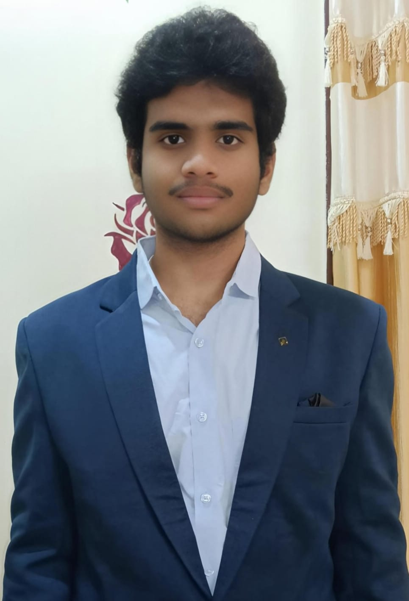
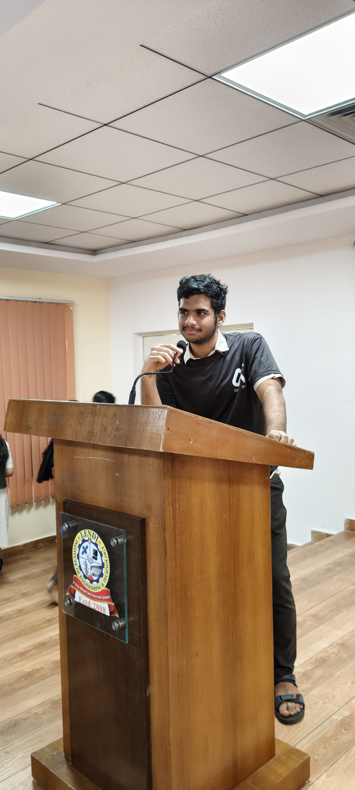

FEATURED PROJECT / 01
AGRICULTURE × INTELLIGENCEKrishi Chakra2.0
Smarter decisions.
Stronger farming communities.
An AI-powered ecosystem bringing agricultural insights, resource planning, and equipment access into one connected experience.
Open to opportunities
INDEPENDENT MIND. BUILDER AT HEART.Hey there, I’m Bayya Akhil
A full-stack developer with a curious mind.
Bringing thoughtful interfaces and practical AI together to build things that matter.

01 / SELECTED WORK
Real problems. Considered solutions.
A selection of things I’ve brought to life.
FEATURED PROJECT / 01
AGRICULTURE × INTELLIGENCESmarter decisions.
Stronger farming communities.
An AI-powered ecosystem bringing agricultural insights, resource planning, and equipment access into one connected experience.
From finding the right specialist to live bed visibility. Hospital workflows, thoughtfully connected.
Turn résumé feedback into a clear next step with AI analysis, role-specific insights, and skill roadmaps.
04 / ACCESSIBILITY · MULTIMODAL AI
Turning visual context into voice.
More ways to experience the world.
05 / HEALTHCARE · GENERATIVE AI
Connecting rural patients and surgeons
through thoughtful recovery follow-ups.

OFF THE KEYBOARD. IN THE COMMUNITY.Stay curious.
Build something meaningful.
02 / BEYOND THE CODE
I like the moment an idea stops being a “what if” and starts becoming something real.
I’m Bayya Akhil, a Computer Science student at Lendi Institute of Engineering & Technology. My work brings full-stack development and AI together around challenges worth solving.
From helping farmers make better decisions to making healthcare more connected, I care about what technology makes possible for people.
As R&D Lead at Aiverse Club, I also help create space for students to experiment, share ideas, and build with AI. Learning works better when it’s shared.
03 / MY TOOLKIT
From the first sketch to the last commit.
The right tool for the problem at hand.
Responsive, accessible interfaces that make complex things feel simple.
FRONTEND DEVELOPMENTAPIs, data, and architecture that connect the pieces behind the experience.
BACKEND & DATABASESPractical AI integrations shaped around useful, human-centered outcomes.
APPLIED ARTIFICIAL INTELLIGENCEUnderstand the problem. Build with care. Keep getting better.
MY APPROACH, ALWAYS.04 / THE JOURNEY SO FAR
Moments that matter.
And a reminder to keep moving forward.
IDEAS INTO ACTION
Second prize at MVGR College of Engineering. A little recognition for thinking differently.
INNOVATION, CLOSE TO HOME
Recognized at Lendi National Innovation Summit for solving challenges in rural communities.
PERSPECTIVES THAT STAY
Sharing ApexResume, gathering feedback, and learning from people building at scale.
Selected credentials & continued learning
NASSCOM & MeitY · 96% assessment · 26 NSQF modules
AWS Academy · Two learning credentials
ServiceNow · CSA & CAD
Cisco · CCNA & artificial intelligence